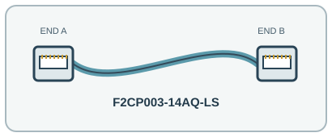

[ INDIVIDUAL COMPONENT // COPPER ETHERNET PATCH CORD ]
Belkin F2CP003-14AQ-LS 14 ft Cat6A Shielded Patch Cable
A factory-terminated, shielded 14-foot Cat6A patch lead for short 10GBASE-T and lower-rate Ethernet connections. Confirm the shielding scheme and connector latches suit the installed channel.

IDENTIFICATION: Exact manufacturer model/SKU: Belkin F2CP003-14AQ-LS. Connector fit alone does not establish electrical, optical, protocol or platform compatibility.
Product specifications
| Manufacturer model / SKU | Belkin F2CP003-14AQ-LS |
|---|---|
| Product type | COPPER ETHERNET PATCH CORD |
| Connector/end types | RJ45 (8P8C) male plug → RJ45 (8P8C) male plug; straight-through Ethernet patch lead; manufacturer does not specify the wiring map on the cited pages. |
| Fiber grade / Ethernet category | Category 6A (Cat6A), four-pair 26 AWG stranded copper. |
| Length | 14 ft (4.27 m). |
| Bend radius and shielding | SSTP shielded twisted-pair construction; PVC jacket, nominal 6.2 ± 0.3 mm outside diameter. Belkin does not publish a minimum bend-radius value on the cited product/support pages; avoid kinks and follow the cabling-system installer requirements. |
| Speed / distance limits | Up to 10 Gb/s 10GBASE-T over a compliant Cat6A channel (up to 100 m channel length); the patch cord itself is 14 ft and is not a 100 m-rated standalone link. Do not interpret the 100 m Cat6A channel limit as the reach of this 14 ft component by itself. |
| Compatibility | Cat6A RJ45 Ethernet switch, NIC, patch-panel or router ports; backward interoperability with Cat6/Cat5e Ethernet ports at the negotiated rate. Shielding works correctly only with a properly bonded shielded system. |
Compatibility and handling
Cat6A RJ45 Ethernet switch, NIC, patch-panel or router ports; backward interoperability with Cat6/Cat5e Ethernet ports at the negotiated rate. Shielding works correctly only with a properly bonded shielded system.
Bend-radius note: No minimum bend radius is published for this SKU in the manufacturer sources; do not kink or sharply fold the cable.
Shielding / jacket: SSTP shielded twisted pairs; PVC outer jacket.
Inspect the jacket, strain relief, latch and end faces before use. For optical assemblies, keep dust caps in place and never look into a live fiber. For copper/active-end assemblies, avoid tight bends and cable crushing; validate PoE and device compatibility from the relevant port documentation.
Manufacturer sources and technical references
- Belkin — F2CP003-14AQ-LS Cat6a snagless patch cordManufacturer SKU, length, category, connector and construction details.
- Belkin — 10G Cat6a snagless patch-cord familyManufacturer family description and 10G Cat6a capability.
- IEEE 802.3 — Ethernet standards working groupEthernet PHY standards; actual 10GBASE-T reach depends on the compliant complete channel.
Manufacturer sources are HTTPS. Limits quoted here are link/application limits: the installed cable channel, transceivers, connectors, port support and installation quality determine actual service. Confirm model revision and regional documentation before deployment.